DPC DataPath Compiler Tutorial |
Part 1
Running DPC
Introduction
- Welcome to the Data Path Compiler (DPC) from Micro Magic Tools. DPC runs on top of SUE and hence is sometimes referred to as the SUE Data Path Compiler or SUE DPC. Because DPC relies on SUE, you should be familiar with SUE before running this tutorial. We suggest you first run the SUE Tutorial or at least look at the SUE Manual before proceeding.
DPC Overview
- DPC quickly converts SUE schematics into high performance data paths using icon positions, annotations, and hierarchy. Every time you run DPC, it creates the following three files:
- All of the gates in the Verilog netlist are also included in the DEF placement file with their associated positions and orientations. Thus, to route the data path you need only pass the Verilog netlist and the DEF placement file to a router like Cadence's Silicon Ensemble or Avant!'s Apollo. Note that you might also want to massage the Verilog netlist and/or placement file with your own scripts to add scan-stitching and/or clock insertion if you didn't add them explicitly to the schematics.
- Since DPC knows where all of the cells in the design are, it can estimate the wires quite precisely. DPC does this by performing a Steiner Route on each net in the design and computing the RC parasitics from that route given the capacitance per unit length and resistance per unit length of the technology, including millering. This estimated parasitic file is typically in DSPF format.
- For timing verification and optimization, DPC sends the Verilog Netlist and the estimated parasitic file to a Static Timing Analyzer such as Pearl from Cadence or Pathmill or PrimeTime from Synopsys. It then annotates the critical path directly on the graphical view in SUE. In addition, the placement view can also be shown with the critical paths displayed directly on the placement as shown in Figure†1.
Figure 1: Composite Figure Of Critical Path
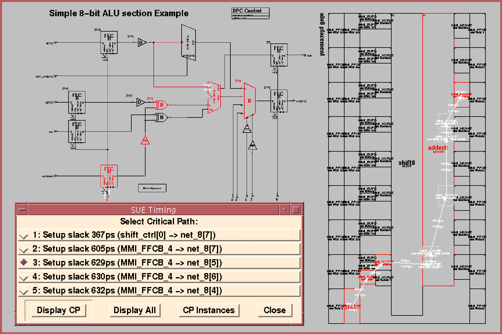
DPC Features
- Quickly builds custom-like data paths using standard cell libraries.
- Can also build full custom data paths using your own custom library.
- Does bit-slice or packed data path designs.
- Interfaces to industry standard timing verifiers (Pearl, PrimeTime, Pathmill).
- Handles both combinational and sequential circuits.
- Control logic can be intermixed with data path.
- Outputs Verilog netlist and DEF file to be used with any router.
- Fast -- 10K gates in less than a minute.
- This tutorial will carefully walk you through these features and many more.
Getting Started
- Before we get started make sure someone has already installed SUE at your site. This Tutorial is entirely self-contained using a special demo mode.
- Remember, this DPC tutorial assumes that you have completed the SUE Tutorial.
Running the Tutorial
- To run the tutorials, you need to make a personal copy of the DPC tutorial example files using
mmi_tutorial.
- Make sure that the appropriate tutorial is selected and then click on "
Install Tutorial". The default installation directory ismmi_private/tutorialin your home directory. You can also select a different directory for installation. Don't worry if the directory doesn't exist, themmi_tutorialscript will make it if it can. You can also use this to reinstall a clean copy of the tutorial.
- You just brought up SUE and loaded the schematic "
alu8". However, a lot more got done from the .suercfile in this directory. The.suercfile loaded a standard cell library provided with the demo. It set up DPC variables for the design as described in the DPC Manual. Finally, it put you in DPC mode which you could have also done withChange Simulation Modein theSimmenu.
- You should now see something like Figure†2 on your screen. When you ran the SUE tutorial, you started out with the basics and worked your way forward. In this tutorial, we start from the end and look at a finished schematic to see just what DPC can do. Later we'll go back to simple examples.
Figure 2: Schematic Of "alu8"
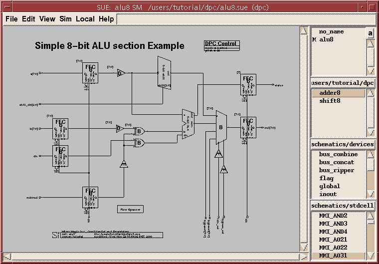
Running the DPC Example
- Before we go through the "
alu8" example, Let's think about what is really important when designing data paths. For data paths to be fast, the wire lengths have to be minimized which means things need to be lined up in bit slices just as in custom design. The problem with custom design is that you don't know exactly how fast or how big it will be until you are done with the design, and then it's too late to make any changes. DPC works its magic by doing a very fast placement and then accurately predicting wire lengths. By introducing accurate wire predictions at the beginning of the design flow, DPC allows designers to accurately size and time their designs early. Changes made early are far less costly than those made late in the design process. Also, DPC makes iterations quickly - one minute per 10,000 gates. Fast iteration means fast improvement, yielding faster and smaller designs.
Placing the Adder
- The
alu8schematic describes a simple 8-bit alu with a barrel shifter and adder/subtracter in it. The data flows from the left to the right and the MSB is on the top and LSB is on the bottom. Let's start with the adder.
- Select the adder icon and push into it with the e hotkey. You should see Figure†3.
Figure 3: Schematic Of "adder8"
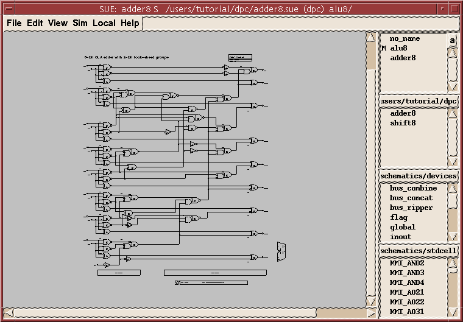
- You just ran the first part of DPC and created the Verilog netlist, DEF placement file, and estimated parasitic file for the adder! Look at the window you started SUE from. You should see statistics about the size, cell utilization, and number of cells in your design. Let's now look at the results of the placement (later we will described the placement algorithm):
- Type Ctrl-a or
Toggle Placement Viewin theSimmenu to see the placement. You should see two columns of cells as shown in Figure†4.Figure 4: Placement View Of "adder8"
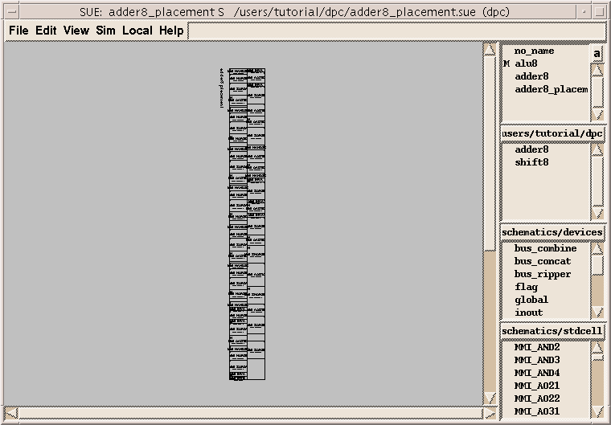
- Typically you create a data path by creating/changing the schematic, running
DPC Netlist, and looking at the placement. You iterate until the placement is satisfactory. Then you time the design.
Timing the Adder
- DPC just ran
DPC Netlistagain but then followed that withTime Itfrom theSimmenu. If you weren't in DEMO mode, you would have just run the Static Timing Analyzer. In DEMO mode, we save the output from the last time we ran the Static Timing Analyzer so you can't change anything.
- When DPC is done, it will pop up a timing control window called
SUE Timing. This window lists the top critical paths in the design and has some push buttons which we will describe below. If you close the window or it gets buried under other windows, you can always bring it back withDisplay Timingin theSimmenu.
- You should also see the critical path through the adder highlighted in blue (assuming you are using the default colors) and the timing values annotated on the schematic in white. Do you see that the critical path goes from the LSB (
a[0]in this case) to the MSB (coutin this case)? In most data paths with arithmetic elements like adders, you get critical paths from LSB to MSB because even the lowest bit of the adder can affect the carry out.
- Zoom in around the lower left hand corner of the schematic using z until you can read the numbers around the first two gates in the critical path, as in Figure†5. Don't worry if the numbers are not the same.
Figure 5: "adder8" Detail With Timing Numbers And Critical Path
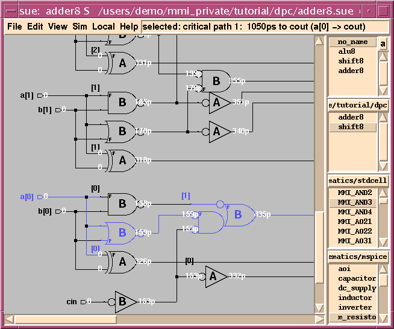
- You should see that all of the inputs arrive at time "0". This is because this is a combinational circuit (more about this later).
- Now, only the values for the critical path are displayed, along with their rise/fall times. If you look at the window that you opened SUE from, you will see the full critical path report from the static timing analyzer shown there, also.
- Let's say you wanted to speed up this critical path by increasing the speed of the first gate in the critical path which is
MMI_NOR2B. Assuming we could make this gate faster, we must first determine if that would even improve the critical path.
- This is probably not a good place to try to improve the critical path. Not only are the signals on the inputs arriving at nearly the same time, but the slower one goes into the input marked with an “
f”. The “f” means that this is the fast input on the gate and thus can handle a slightly slower input. In some gates, the differences between fast and slow inputs can be substantial (on the order of 50ps) and thus you should always consider this when designing.
- Now let's look at some of the other critical paths in the adder.
- We could probably improve the critical path of the entire adder by about 50ps if we could fix the center of this critical path.
- Are you starting to get the feeling that you could make this adder quite a bit faster? If so, you are starting to understand the power of DPC. Remember that you can't be in DEMO mode to see the effects of any changes you make to the adder.
Placing the ALU
- Now let's look at the whole ALU design which includes the adder in it.
- Hit Shift-n or
DPC Netlistin theSimmenu and then Ctrl-a orToggle Placement Viewin theSimmenu to see the placement as shown in Figure†6.Figure 6: Placement View Of "alu8"
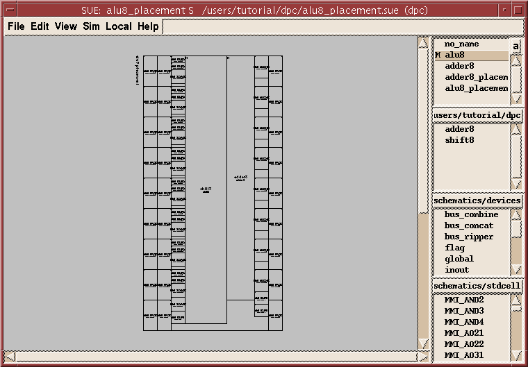
- DPC shows the placement hierarchically, so even as your data path gets big, it will still be manageable. You should easily see the shifter (
shift8) and the adder (adder8) in the design. For placement purposes, hierarchical cells are similar to large custom cells, except that DPC handles the row flipping. In fact, if you weren't happy with the speed of your adder (or any other circuit) using standard cells, you could layout a full custom adder and use it instead without having to modify your flow or do any other parts full custom. Now that's mix and match!
- Notice that the standard cells are arranged in bit slices like a custom design.
- If you are having trouble seeing where the bit slices begin and end, try turning on the grid with g or
Toggle Gridin theViewmenu (see Figure†7).
- We have set this example up so that the bit pitch is equal to the width of the biggest cell in the standard cell library, which is a Flip Flop. We have found this works about the best.
Figure 7: DPC Grid View
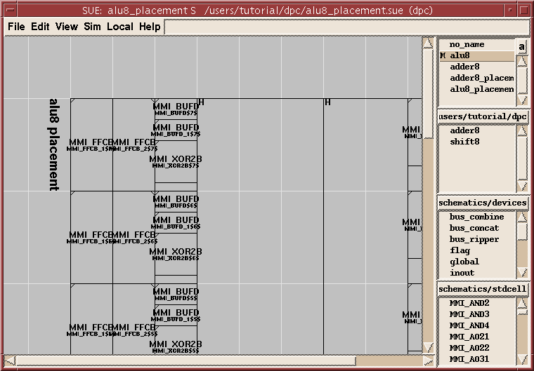
- You can still see the flattened design if you want to. Let's look at the adder cells:
- Zoom in (z) to the upper right corner of the adder. You should see an "
H" as shown in Figure†8. This tells you that this is a hierarchical cell that you can push in to.Figure 8: Zoom View Of Hierarchical "adder8" Cell
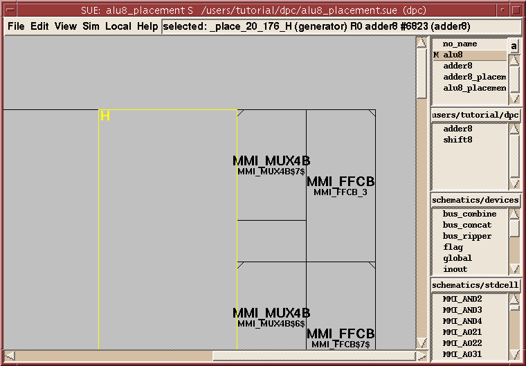
- Hit Shift-s or
Display in Other Viewin theSimmenu. You should now see that gate highlighted in the placement, as shown in Figure†9. Since the gate wasn't currently expanded (it's in theadder8hierarchical cell), DPC just shows you a temporary version of it.Figure 9: DPC `Display Other View'
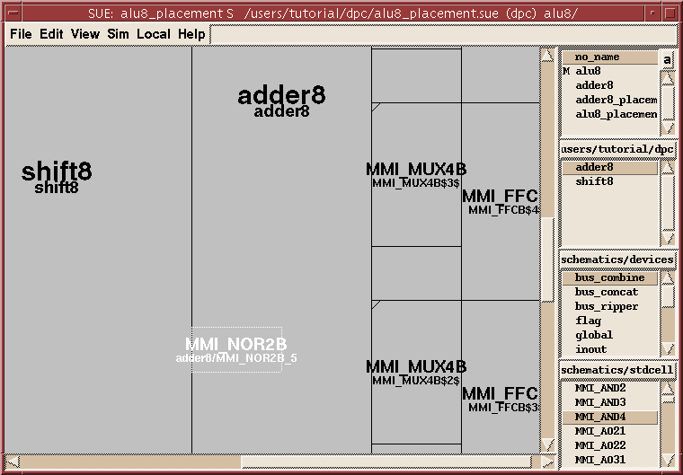
Timing the ALU
- We are now going to time the ALU (
alu8). Since this is a sequential circuit, we had to set up a few parameters beforehand like the clock period, the clock signal name (example:clk), and so forth, which we will describe later. Otherwise timing the ALU is just as easy as timing the adder, as you will see now:
- Notice that the
SUE Timingwindow reports values in terms of slack time to the clock period, which is set to 3ns in this case, as illustrated in Figure†10.Figure 10: SUE Timing Window Showing "alu8" Timing Values
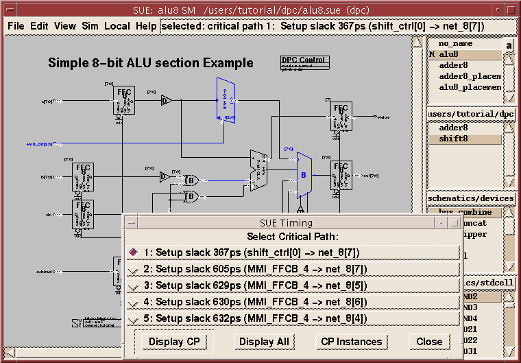
- An entire design can rarely be captured in a single static timing analysis and hence external I/O timing must be identified. In most cases, this involves specifying the input arrival times of external inputs, and the output setup and hold times of external outputs.
- In a clocked, sequential circuit, the only signal which arrives at time 0ps is the clock (for example, "
clk" inalu8). The rest of the signals should arrive at a minimum of one clock-to-q later, since they must be latched/registered elsewhere. This is known as the arrival time. In reality, input signals typically have additional delay from wires and other logic. Furthermore, outputs must have time to be latched/registered elsewhere and also need time for wires or additional logic -- the departure time. (The sum of the arrival and departure times should be greater than the cycle time to insure that sections verified separately will pass when verified together.)
- Note also that this example assumes "ideal clocks": there is no skew between the clock inputs to each register. In order to see the effects of clock skew, you need to add your clock tree into DPC.
- Let's get back to the
alu8now. You see that the first critical path goes through the shifter. Let's find the critical path through the adder.
- We are now going to push into the adder. The adder is already selected but so are some other icons, so we can't just hit e because SUE won't know which icon to push into. In addition, we would rather not click on the adder to select only it because then all the timing annotations would go away (
Display CP/Display Allbrings them back).
- Click on
Display CPin theSUE Timingwindow. You should see something like Figure†11. The critical path is now annotated onto the placement! This is really useful for tracing critical paths, especially on big designs.Figure 11: Critical Path Annotated Onto Placement
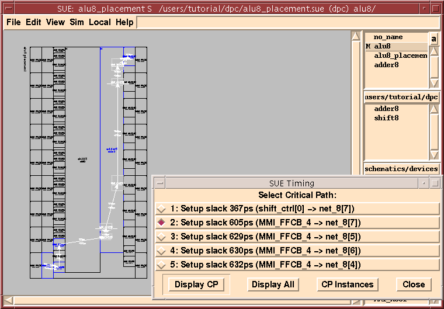
- Let's look at one more feature for searching through critical paths.
Changing Timing Parameters inside DPC
- While all of the setup parameters for DPC are found in the
.suercfile and described in the Micro Magic Tools DPC Manual, there are some that can be changed when running DPC.
- Go to the
Simmenu and hitTime It. You should see a popup window that looks like Figure†12.Figure 12: `Time It' Timing Setup Popup Menu
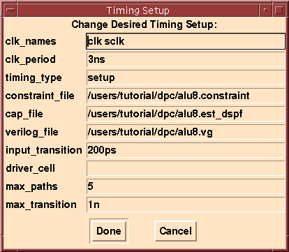
- You can see and/or change any of these parameters. For example, if you want to see more than just the top five critical paths, change
max_pathsto a bigger number. When you hitDone, a new timing run will be performed. Remember that if you are in DEMO mode, no changes are actually made.
- Here's a quick description of the fields in the
Timing Setupmenu:
clk_namesmust contain a space-separated list of all of the top-level clock names in your design. DPC also figures out that your circuit is sequential if it finds any of these names in the circuit.
clk_periodis the clock period for computing slack/violations. You should already account for clock skew (unless the clock tree is fully in DPC) and jitter. For example, if you are trying to achieve 400MHz (2.5 ns) and you know that your additional clock skew/jitter is 300ps, then you would want to set this to 2.2ns.
timing_typeis either setup or hold. If set to hold and you are using Pearl, this will look for hold violations instead of setup violations.
constraint_fileis the path to a file that contains specific hand-entered constraints for your design. This must be in the syntax of the specific static timing analyzer that you are using and will simply be included into the run. You might block false or multi-cycle paths here, or set specific arrival/departure times for known signals like reset. Note that any constraints set here will override DPC defaults.
cap_fileis the path to the parasitic file used for static timing analysis. This is typically the file generated by DPC during DPC Netlisting. However, once you have routed your design, you can put the path to the extracted parasitic file here to run timing using extracted instead of estimated timing in the same DPC environment. Although routers often do strange and unexpected things, if the route is a good one DPC typically predicts timing within 100 ps. This accuracy is something wire load models can't come close to.
verilog_fileis the Verilog gate level netlist used for static timing analysis. Typically, this is the file generated by DPC but can be different; for example, for post-route analysis where you have modified your netlist with scripts to add the scan chain or clock tree.
driver_cellis used to specify a cell to drive all of the inputs with (timing verifier dependent). If this is left blank, a fixed slope signal is applied to all external inputs, which can hide the effects of heavily loaded external inputs.
max_paths, described above, specifies the number of paths to be displayed in theSUE Timingwindow. If you want to display the top 10 paths for instance, you would change the number from 5 to 10.
max_transitionspecifies a threshold such that any nodes slower than that threshold will be displayed in the shell window from which you started DPC.max_transitionis a good option for reducing power and for helping to uncover potential bugs or problems in your implementation.
- There is one last parameter that you should know: the default output load. All external outputs must drive into some load to give reasonable timing values. This value defaults, in this example, to 20fF and is set in the
.suercfile. It can also be overridden, on a net by net basis, in theconstraint_file.
| ----- Micro Magic ----- |